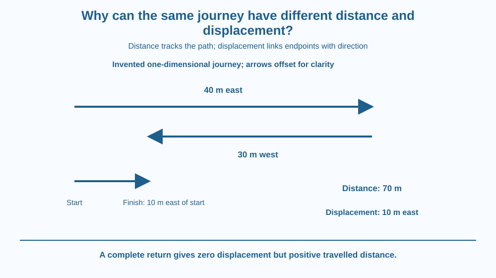

Distinguish total distance travelled from displacement. Use a defined starting point, endpoint and direction to describe the same journey in two ways. Explain how returning to the start can give zero displacement without erasing the distance already covered.
A student walks from a gate to a classroom, then back to the gate. The student has clearly moved, yet a position comparison shows no final change from the starting point.
Is zero an incorrect answer? It depends on the question. Zero can correctly describe displacement while a positive number correctly describes the distance travelled.
Motion reports become confusing when these quantities are treated as interchangeable. A route has a length, while the relation between its endpoints has both a size and a direction.
Distance travelled is the total length of the path followed. It accumulates as the traveller moves, regardless of whether a segment points toward or away from the starting point. Distance is a scalar quantity with magnitude but no associated direction.
Displacement is the change in position from start to finish. It is a vector: its magnitude and direction describe the direct endpoint relationship. It does not reproduce every bend taken along the way.
For an invented straight-route example, walk 40 metres east and then 30 metres west. The total distance is 70 metres. The endpoint is 10 metres east of the start, so the displacement is 10 metres east.
A sign convention can simplify a one-dimensional calculation. If east is positive, the position changes are plus 40 and minus 30 metres, giving plus 10 metres. The chosen sign has meaning only after the positive direction is stated.
For another invented journey, move three metres east and four metres north. The path length is seven metres, while the straight endpoint separation is five metres using the right-triangle relation. The displacement direction also needs describing; five metres alone is only its magnitude.
The magnitude of displacement cannot exceed total path length between the same endpoints. They are equal for a straight journey without reversal, while turns or retracing can make distance larger. A closed return route has zero displacement even when substantial distance was travelled.
An odometer mainly tracks accumulated path length rather than displacement from the original parking place. A map endpoint comparison answers a different question. Neither instrument's purpose should be inferred from the everyday word how far without clarification.
This distinction also affects averages. Average speed uses total distance divided by elapsed time; average velocity uses displacement divided by elapsed time. We use that connection only to clarify the quantities, without repeating force, inertia or a later speed-graph integration lesson.
Draw a winding path from a start marker to a finish marker. Trace the full path with one colour. Then add a straight arrow joining the markers with another colour.
The trace represents travelled distance. The arrow represents displacement. Turning the page does not change either physical quantity, but any compass labels or coordinate axes must turn consistently with the drawing.
Now add a return segment to the start. The coloured trace becomes longer while the displacement arrow shrinks to zero because its endpoints coincide. This visual contrast prevents the mistaken claim that zero displacement means nothing happened.
The SVG shows a route with an outward and partial return segment, alongside the direct start-to-finish arrow. The invented 40-metre and 30-metre example produces 70 metres of path and 10 metres east displacement.
A second small route returns completely to its start. Its caption gives positive travelled distance and zero displacement. The numbers are instructional examples, not measured school-route data.
Direction labels and separate colours keep path length and endpoint change distinct. The illustration is not a force diagram and does not treat an arrow's length as an acceleration or a reason for the motion.

A runner completing a lap ends where the lap began. A lap counter can record a meaningful positive distance while the start-to-finish displacement is zero. The training was real even though the endpoint did not change.
A delivery vehicle may travel many streets before ending close to its depot. Fuel use and route planning depend on more than the small endpoint separation. A map's direct arrow does not describe the full road distance.
Indian school journeys also include turns and detours. Saying the school is a certain distance away can mean a direct map separation or a practical route length, so a careful description states which one is intended.
Use squared paper, a ruler and a pencil. No outdoor walk or road crossing is needed.
Choose a simple scale and label it invented. Grid steps are not automatically metres without that scale. Keep units and direction beside the answer so the paper model tests the intended quantities rather than relying on an unlabelled drawing.
Two travellers share the same start and finish but take different routes. Which quantity must match if their endpoints match, and which can differ?
Now imagine one traveller makes an extra complete loop before arriving. Explain why displacement is unchanged while distance increases. The distinction identifies what information the endpoint summary intentionally leaves out.
What does displacement describe?
Answer: C — Displacement connects the starting and finishing positions as a vector.
Why does returning to the start give zero displacement?
Answer: A — Endpoint coincidence makes position change zero while the path can remain positive.
An invented walk is 40 m east then 30 m west. What is its displacement?
Answer: B — Taking east as positive gives 40 minus 30, or 10 metres east.
Create two routes with the same endpoints and different lengths. Label the travelled distance and displacement vector for each. Include a direction convention and suitable units.
Then add a closed loop to one route and explain its effect. Your answer should make it impossible for a reader to confuse zero endpoint change with zero motion. Use invented map distances rather than presenting a sketch as a surveyed real journey.
A quantity can intentionally ignore much of a journey and still be useful. Displacement preserves the endpoint change while leaving out the path history. Distance preserves accumulated path length while leaving out the final direction. Neither is wrong; they answer different questions about the same motion.
Distance adds the whole path, while displacement compares endpoints with direction; returning to the start gives zero displacement without cancelling travelled distance.